5.5 Bar Chart
5.5.1 Single Dimension Data
- Use bar to repfresent frequency chart
- plot requre a factor to plot frequency chart
- barplot require conversion of vector into table for plotting
- qplot default to geom_bar when single categorical-alike feature is used
par(mfrow=c(1,2))
plot(as.factor(my.df$dept))
barplot(table(my.df$dept))
qplot (data = my.df, x=dept)
qplot (data = my.df, x=dept, geom='bar')
ggplot(data = my.df, aes(x=dept)) + geom_bar()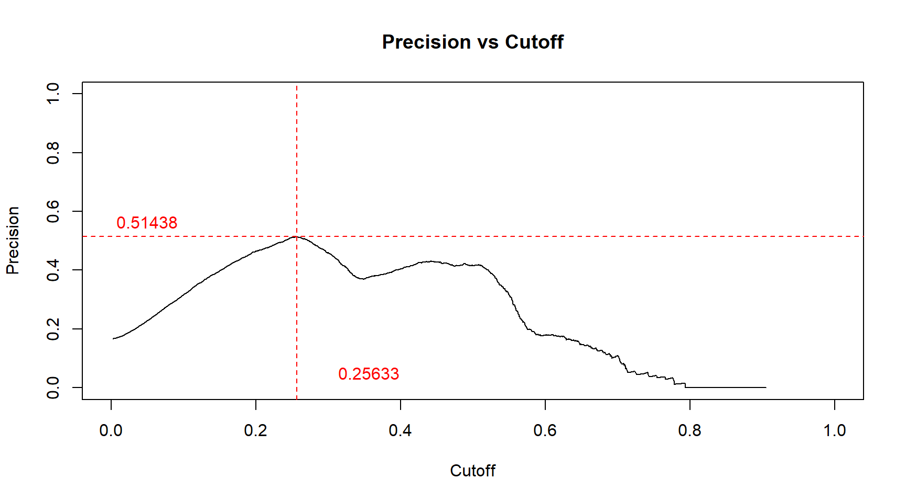

5.5.2 Two + One Dimension Data
- Use fill to introduce extra variable visualizion in filling the bar
- Use color to have the extra variable represented with border color
qplot (data = my.df, dept, fill = grp)
qplot (data = my.df, x = dept, fill = grp, geom='bar')
ggplot(data = my.df, aes(x = dept, fill = grp)) + geom_bar()
ggplot(data = my.df, aes(x = dept, color= grp)) + geom_bar()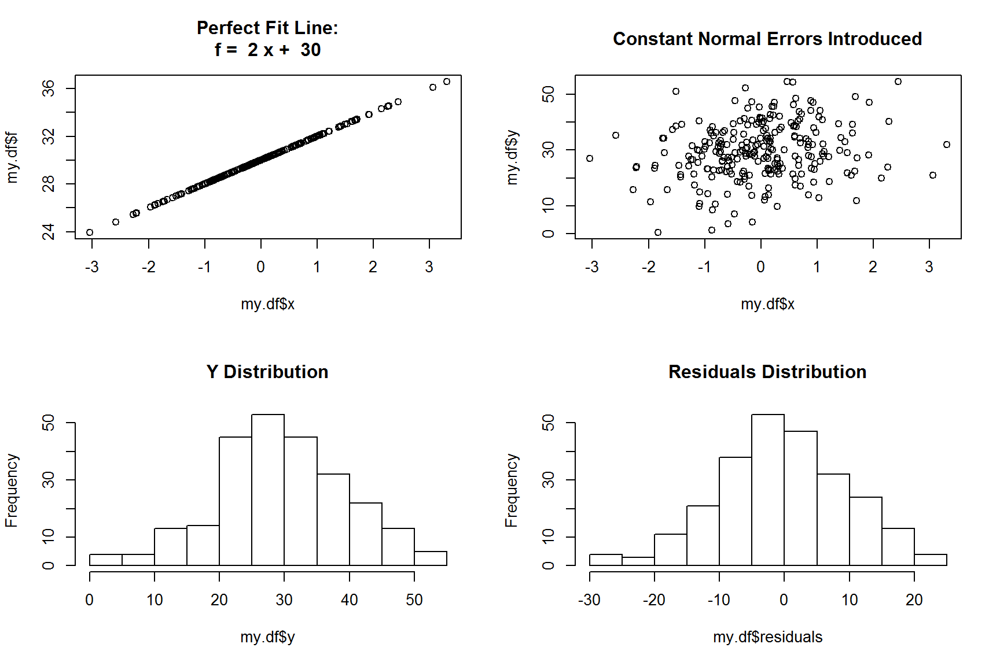 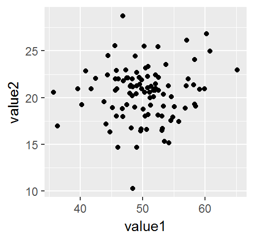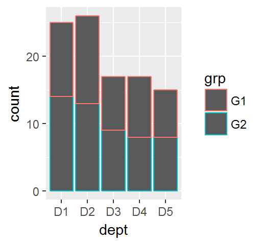
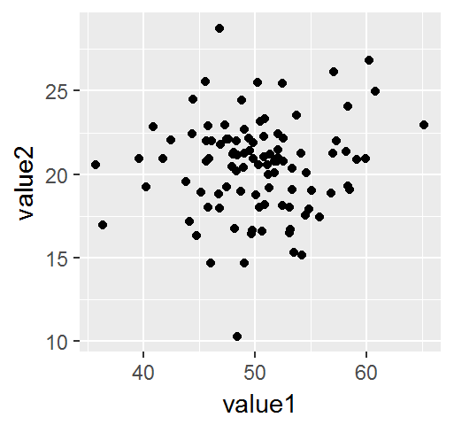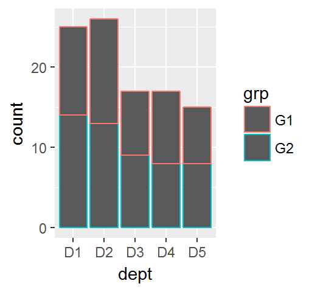
5.5.3 Reordering
qplot (data = my.df, x=dept)
qplot (data = my.df, x=dept, geom='bar')
ggplot(data = my.df, aes(x=dept)) + geom_bar()


5.5.4 Positioning
- qplot does not support positioning
- For ggplot/qplot, default position is stack
- position = ‘dodge’ similar to position = position_dodge(), however the later is more flexible with ability to adjust overlapping level between sub-bar (default is 0.9)
g = ggplot(data = my.df, aes(x=dept, fill=grp))
g + geom_bar(position='stack') # default position
g + geom_bar(position='dodge')
g + geom_bar(position=position_dodge()) # default 0.9
g + geom_bar(position=position_dodge(0.5))
g + geom_bar(position=position_dodge(1.0))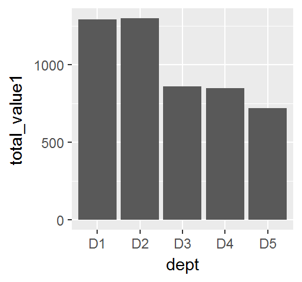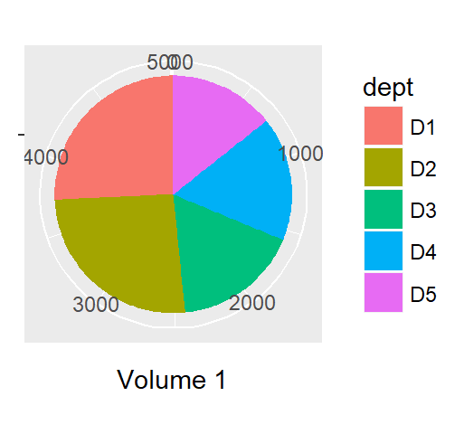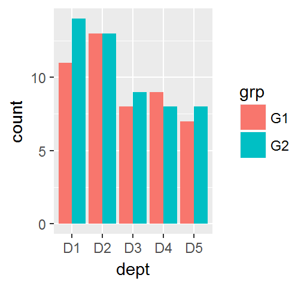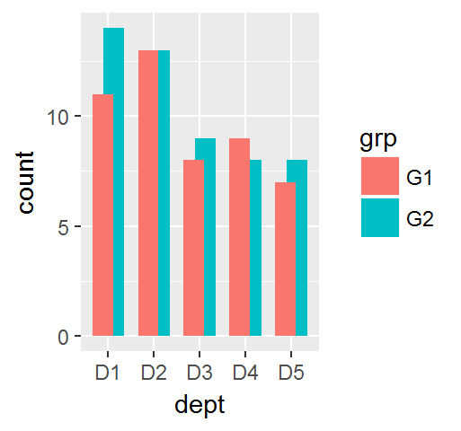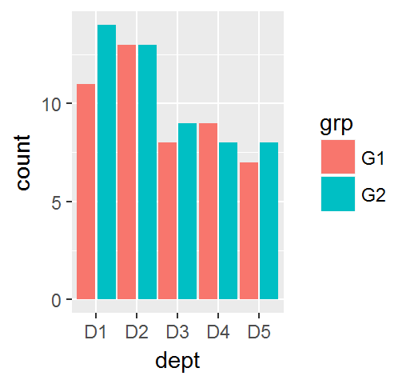